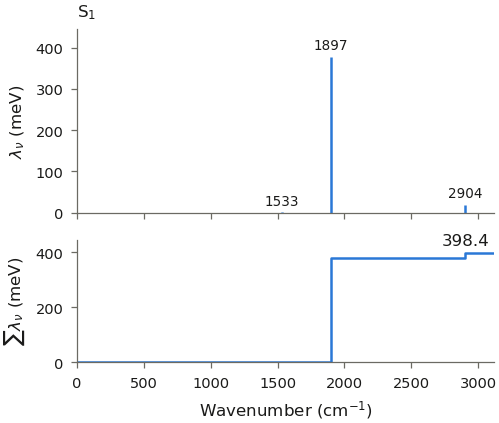
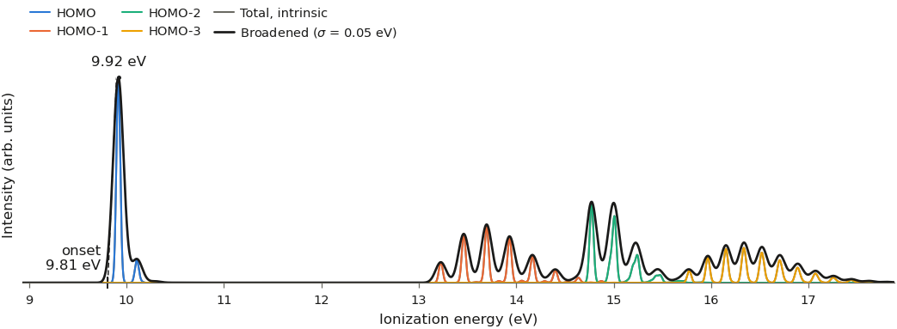
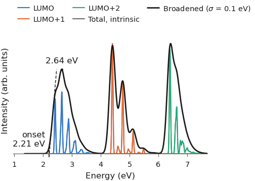
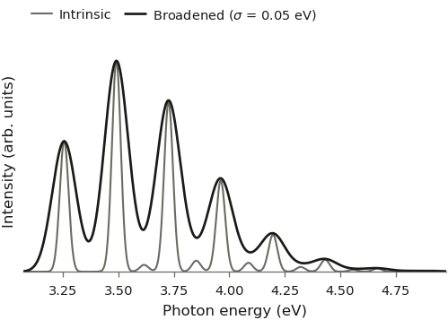
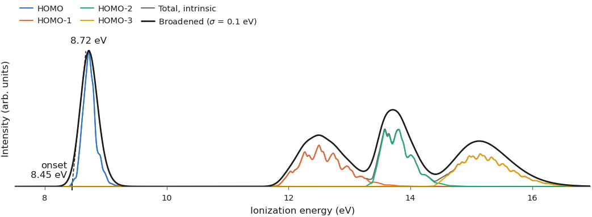

Vibronic spectra from GW gradients¶
What this tutorial is about¶
Photoemission (UPS), inverse photoemission (IPES) and absorption spectra of molecules are not sets of sharp lines: when an electron is removed, added or excited, the nuclei relax, and the spectrum shows a vibrational progression for every level. This tutorial computes such vibronically resolved spectra with pyxtp.vibronic:
optimize the ground state with analytic DFT forces,
compute the Hessian by finite differences of these forces,
run DFT and GW-BSE once, with analytic gradients of a range of quasiparticle (QP) levels and of an excited state,
turn the gradients into mode-resolved couplings (reorganization energies and Huang-Rhys factors),
build the spectra (one molecule, then an ensemble) and plot them.
Steps 1-3 are the expensive ones; everything after them takes seconds and can be repeated as often as needed. As an example we use formaldehyde in a small basis so that the whole notebook runs in a few minutes. The theory and all options are described in the manual section Vibronic spectra.
[1]:
import os
from pathlib import Path
import numpy as np
import matplotlib.pyplot as plt
from ase.build import molecule
from ase.optimize import BFGS
from ase.io import write
from pyxtp import xtp
from pyxtp.vibronic import (FiniteDifferenceHessian, xtp_ground_state_factory,
QPLevels, level_spectrum, add_gradients,
couplings_from_gradient, read_gap_gradient,
vibronic_lineshape, Spectrum)
from pyxtp.vibronic.plot import (paper_style, plot_spectrum, plot_couplings,
SINGLE_COLUMN, DOUBLE_COLUMN)
workdir = Path('vibronic').absolute()
workdir.mkdir(exist_ok=True)
Settings¶
The same DFT settings must be used in all steps: the Hessian, the gradients and the geometry belong to one potential energy surface. settings uses the pyxtp option names (calc.set(**settings)).
[2]:
settings = {'dftpackage/functional': 'XC_HYB_GGA_XC_PBEH', # PBE0
'dftpackage/basisset': 'def2-svp',
'dftpackage/auxbasisset': 'aux-def2-svp'}
gw_settings = {'gwbse/gw/mode': 'G0W0',
'gwbse/gw/sigma_integrator': 'ppm',
'gwbse/bse/exctotal': '5',
'dftpackage/convergence_tightness': 'verytight'}
nthreads = 2
Step 1: ground-state geometry¶
The couplings are computed at the minimum of the ground state, so the geometry has to be optimized tightly with the same method. xtp_ground_state_factory returns calculators that run only the DFT part of dftgwbse with analytic forces.
[3]:
factory = xtp_ground_state_factory(settings, nthreads=nthreads)
atoms = molecule('H2CO')
optdir = workdir / 'optimization'
optdir.mkdir(exist_ok=True)
os.chdir(optdir)
atoms.calc = factory(optdir, None)
BFGS(atoms, logfile='bfgs.log').run(fmax=5e-4)
os.chdir(workdir)
atoms.calc = None
write(workdir / 'minimum.xyz', atoms)
Step 2: Hessian by finite differences¶
FiniteDifferenceHessian displaces every atom along x, y and z in both directions (6N + 1 = 25 force calculations here). Every displacement runs in its own directory: a repeated run() skips what is done, an interrupted run resumes, and several processes (or array jobs, run(part=i, nparts=n)) can work on the same directory. The displaced SCFs start from the orbitals of the reference geometry.
[4]:
fd = FiniteDifferenceHessian(atoms, factory, workdir=workdir / 'hessian', step=0.005)
print(len(fd.displacements()), 'force calculations')
fd.run()
print(fd.status()['pending'], 'pending')
25 force calculations
[] pending
normal_modes() assembles the Hessian and projects out translations and rotations exactly, so there are always 3N - 6 vibrations. The residual forces at the reference geometry and the asymmetry of the finite-difference Hessian tell how reliable the result is.
[5]:
modes = fd.normal_modes()
modes.save(workdir / 'modes.npz')
print(f'max residual force: {np.abs(fd.reference_forces()).max():.1e} eV/Angstrom')
print(f'Hessian asymmetry: {fd.asymmetry:.1e} eV/Angstrom^2')
print(modes.summary())
max residual force: 4.1e-04 eV/Angstrom
Hessian asymmetry: 1.9e-03 eV/Angstrom^2
6 vibrational modes, 0 imaginary
1197.41 1268.25 1532.96 1897.20 2904.18 2969.94
Step 3: one GW-BSE run with gradients¶
At the minimum we run DFT and GW-BSE once and ask for analytic gradients of
the QP energies of a range of levels (
qp_gradients, here HOMO-3 to LUMO+2), for photoemission and inverse photoemission, andthe lowest singlet excitation (
excited_state='s1'), for absorption.
Both are stored in the orb file. The gradients include the response of the QP corrections (G0W0 or evGW, plasmon-pole or exact self-energy).
[6]:
gwdir = workdir / 'gw'
gwdir.mkdir(exist_ok=True)
os.chdir(gwdir)
calc = xtp(nthreads=nthreads, excited_state='s1')
calc.set(**settings, **gw_settings)
calc.options.qp_gradients = 'homo-3:lumo+2'
gs = atoms.copy()
gs.calc = calc
gs.get_potential_energy()
os.chdir(workdir)
orbfile = gwdir / calc.hdf5_filename
levels = QPLevels.from_orb(orbfile)
for label, e in zip(levels.labels, levels.energies):
print(f'{label:8s} QP energy {e:9.3f} eV')
HOMO-3 QP energy -16.469 eV
HOMO-2 QP energy -15.013 eV
HOMO-1 QP energy -13.800 eV
HOMO QP energy -9.940 eV
LUMO QP energy 2.738 eV
LUMO+1 QP energy 4.652 eV
LUMO+2 QP energy 6.588 eV
Step 4: couplings¶
The gradient of an energy gap, projected on the mass-weighted normal modes, gives the reorganization energy \(\lambda_\nu\) and the Huang-Rhys factor \(S_\nu = \lambda_\nu / \hbar\omega_\nu\) of every mode. For the HOMO, the oxygen lone pair of formaldehyde, the coupling is weak; the deeper levels and the LUMO (\(\pi^*\)) couple strongly to the C=O stretch.
[7]:
for label, c in zip(levels.labels, levels.couplings(modes)):
k = np.argmax(c.reorganization)
print(f'{label:8s} lambda = {c.total_reorganization:.3f} eV, '
f'strongest mode {c.wavenumbers[k]:.0f} cm^-1 (S = {c.huang_rhys[k]:.2f})')
HOMO-3 lambda = 0.692 eV, strongest mode 1533 cm^-1 (S = 2.14)
HOMO-2 lambda = 0.239 eV, strongest mode 1897 cm^-1 (S = 0.81)
HOMO-1 lambda = 0.573 eV, strongest mode 1897 cm^-1 (S = 2.37)
HOMO lambda = 0.022 eV, strongest mode 1533 cm^-1 (S = 0.11)
LUMO lambda = 0.323 eV, strongest mode 1897 cm^-1 (S = 1.10)
LUMO+1 lambda = 0.249 eV, strongest mode 2904 cm^-1 (S = 0.64)
LUMO+2 lambda = 0.186 eV, strongest mode 1897 cm^-1 (S = 0.43)
The excited-state forces of S1 give the couplings of the absorption. read_gap_gradient takes the gradient of the excitation energy from the orb file (ground-state minus excited-state forces).
[8]:
s1 = couplings_from_gradient(modes, read_gap_gradient(orbfile))
print(s1.summary(4))
with paper_style():
fig = plot_couplings(s1, title='S$_1$')
plt.show()
lambda = 0.3984 eV, sum S = 1.667, 6 modes
cm^-1 lambda/meV S
1897.2 378.84 1.611
2904.2 18.84 0.052
1533.0 0.73 0.004
2969.9 0.00 0.000

Step 5: spectra of one molecule¶
level_spectrum selects the levels that belong to a process and places the vibronic line shape of each at its QP energy:
process |
levels |
energy axis |
|---|---|---|
|
occupied |
QP energy (HOMO, HOMO-1, …) |
|
occupied |
ionization energy, \(-E_\mathrm{QP}\) |
|
empty |
QP energy (LUMO, LUMO+1, …) |
|
empty |
electron affinity, \(-E_\mathrm{QP}\) |
The process also fixes on which side of the 0-0 line the progression lies. A small Gaussian broadening sigma gives every vibronic line a width.
[9]:
ups = level_spectrum(modes, levels, 'ionization', temperature=300, sigma=0.02)
for label, note in ups.notes.items():
print(f'{label:8s} lambda {ups.reorganization[label]:.3f} eV, {note}')
with paper_style():
fig = plot_spectrum(ups, broadening=0.05, onset=True, width=DOUBLE_COLUMN)
plt.show()
print(f"onset {fig.onset['onset']:.2f} eV, first peak {fig.onset['peak']:.2f} eV")
HOMO-3 lambda 0.692 eV, molecular QP energy -16.4685 eV
HOMO-2 lambda 0.239 eV, molecular QP energy -15.0128 eV
HOMO-1 lambda 0.573 eV, molecular QP energy -13.7995 eV
HOMO lambda 0.022 eV, molecular QP energy -9.9399 eV

onset 9.81 eV, first peak 9.92 eV
broadening in plot_spectrum is an instrument resolution applied on top; the grey curve is the intrinsic spectrum. The onset is the tangent construction used for experimental UPS and IPES spectra. The inverse photoemission spectrum of the empty levels works the same way:
[10]:
ipes = level_spectrum(modes, levels, 'electron-addition', temperature=300, sigma=0.02)
ipes.save(workdir / 'ipes.dat')
with paper_style():
fig = plot_spectrum(ipes, broadening=0.1, onset=True)
plt.show()

The absorption line shape of S1 uses vibronic_lineshape directly; it is relative to the vertical excitation energy, which we take from the BSE run.
[11]:
omega_s1 = calc.get_excited_state_total_energy() - calc.get_dft_energy()
shape = vibronic_lineshape(s1, 300, 'absorption', sigma=0.02)
absorption = Spectrum(omega_s1 + shape.energy, {'S$_1$': shape.intensity}, 'absorption',
{'S$_1$': shape.reorganization})
print(f'vertical {omega_s1:.3f} eV, 0-0 {omega_s1 + shape.zero_zero:.3f} eV')
with paper_style():
fig = plot_spectrum(absorption, broadening=0.05)
plt.show()
vertical 3.654 eV, 0-0 3.256 eV

More levels later, without a new GW run¶
For large molecules DFT and GW are the expensive part. Gradients of further levels can be added to the existing orb file: add_gradients runs dftgwbse with tasks=gradients, which reads the file and computes only the levels whose gradients are not stored yet. The options must be those of the original run (basis sets and functional are checked).
[12]:
add_gradients(orbfile, qp_levels='homo-5:lumo+2', settings={**settings, **gw_settings},
nthreads=nthreads)
levels = QPLevels.from_orb(orbfile)
print(levels.labels)
['HOMO-5', 'HOMO-4', 'HOMO-3', 'HOMO-2', 'HOMO-1', 'HOMO', 'LUMO', 'LUMO+1', 'LUMO+2']
Ensembles: spectra of a morphology¶
In a film every molecule has its own vertical energies, e.g. from QM/MM. Such site energies are passed per level; a level without site energies uses the distribution of the nearest level that has them, shifted by the difference of the molecular QP energies (notes says how each level was placed). Here we invent a Gaussian distribution of HOMO ionization energies of 500 sites (0.1 eV disorder, lowered by 1.2 eV by the polarization of the environment) for illustration. select restricts the
spectrum to some levels.
[13]:
rng = np.random.default_rng(1)
homo_index = levels.homo
e_homo = levels.energies[list(levels.levels).index(homo_index)]
sites = {'homo': -e_homo - 1.2 + 0.1 * rng.standard_normal(500)} # ionization energies
# only the valence levels (select), the deeper ones lie far out
film = level_spectrum(modes, levels, 'ionization', temperature=300, sigma=0.02,
site_energies=sites, select=['homo-3', 'homo-2', 'homo-1', 'homo'])
for label, note in film.notes.items():
print(f'{label:8s} {note}')
with paper_style():
fig = plot_spectrum(film, broadening=0.1, onset=True, width=DOUBLE_COLUMN)
plt.show()
HOMO-3 site energies of HOMO shifted by +6.5287 eV (molecular QP energy difference)
HOMO-2 site energies of HOMO shifted by +5.0730 eV (molecular QP energy difference)
HOMO-1 site energies of HOMO shifted by +3.8596 eV (molecular QP energy difference)
HOMO 500 site energies

A level keeps its colour in all figures (HOMO and LUMO first, then by the distance from the gap). To compare with a measurement, pass it as experiment=(energies, intensities); it is scaled to the maximum of the broadened total.
The same on the command line¶
All steps are also available as the script xtp_vibronic (installed together with pyxtp), e.g. for runs on a cluster:
xtp_vibronic hessian -x minimum.xyz -w hessian -t 4 \
--set dftpackage.basisset=def2-svp --set dftpackage.auxbasisset=aux-def2-svp
xtp_vibronic hessian -w hessian --part 3 --nparts 16 # e.g. one array job
xtp_vibronic modes -w hessian -m modes.npz
xtp_vibronic gradients molecule.orb --levels homo-9:lumo+9 -o options.xml
xtp_vibronic spectrum -m modes.npz -g molecule.orb -p ionization \
--sites site_energies.dat --columns homo=2 -o ups.dat
xtp_vibronic plot -s ups.dat --broadening 0.1 --onset -e measured.dat -o ups.pdf
xtp_vibronic <command> --help lists all options.